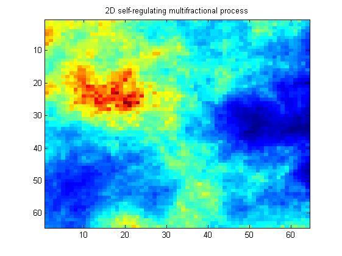
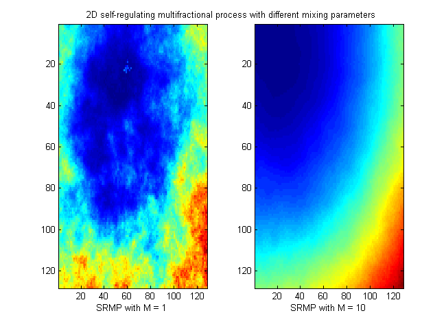

| FRACLAB Functions |
|
Generates a 2D Self-Regulating Multifractional Process from a field of fractional brownian motions using an iterative method
SRMP = srmpfbm2d(N,GZ)
SRMP = srmpfbm2d(...,'Propertyname',Propertyvalue)
SRMP = srmpfbm2d(N,H) Generates the self-regulating multifractional process, SRMP, using a matrix size, [N,N], and a function of z, GZ. The parameter N is a positive integer and the parameter GZ is a vector whose values correspond to a function from (0,1) to (0,1).
|
The function G(z) link the pointwise Holder exponent to the amplitude |
SRMP = srmpfbm2d(...,'Propertyname',Propertyvalue) Generates the self-regulating multifractional process, SRMP, applying the specified property settings. The Property setting can be choosen from the list below:
| Property | Purpose |
|---|---|
| 'shape' |
The SRMP is computed using a specific deterministic prescribed shape, given by the
function Fxy and a mixing parameter, M. |
| 'seed' |
The SRMP is computed with a specific random seed, SEED. This is useful to generate the same path several times or to compare the paths of different SRMPs. |
N = 64; z = linspace(0,1,N); gz = eval('1./(1+5*z.^2)');
x = srmpfbm2d(N,gz);
figure; imagesc(x);
title('2D self-regulating multifractional process');

N = 128; z = linspace(0,1,N); gz = eval('1./(1+5*z.^2)');
x=linspace(0,1,N); y=linspace(0,1,N); [X,Y]=meshgrid(x,y); f = inline('x.^2+y.^2','x','y'); fxy = f(X,Y);
s1 = srmpfbm2d(N,gz,'shape',{fxy,1},'seed',10);
s2 = srmpfbm2d(N,gz,'shape',{fxy,10},'seed',10);
figure; subplot(1,2,1); imagesc(s1); xlabel('SRMP with M = 1');
subplot(1,2,2); imagesc(s2); xlabel('SRMP with M = 10');

[1] O. Barrière, "Synthèse et estimation de mouvements Browniens multifractionnaires et
autres processus à régularité prescrite. Définition du processus autorégulé
multifractionnaire et applications", PhD Thesis, (2007).
[2] O. Barrière, J. Lévy-Véhel, "Intervalles interbattements cardiaques et Processus Auto-Régulé
Multifractionnaire," Journal de la Société Française de Statistique, Vol. 150, No. 1, (2009).
| |
srmpfbm | srmpmidpoint | |